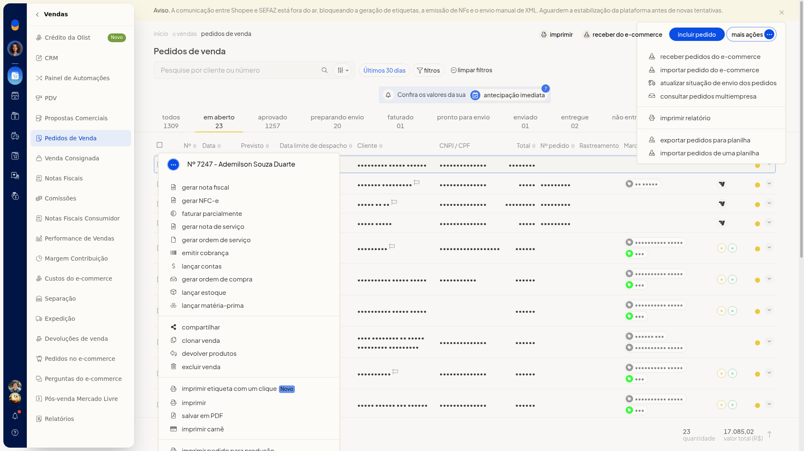

Fluxo e situações dos pedidos
Em Pedidos de Venda, no ERP da Olist, você acompanha em que situação cada pedido está e muda essa situação quando o andamento muda. A lista separa os pedidos por situação e mostra a quantidade em cada aba.
Se Pedidos de Venda não aparecer para você, peça acesso ao administrador da conta.
Instruções
-
Acesse Vendas > Pedidos de Venda.
-
Clique na aba da situação que você quer acompanhar. As abas da barra são Todos, Em aberto, Aprovado, Preparando envio, Faturado, Pronto para envio, Enviado, Entregue e Não entregue. No final da barra aparecem Dados incompletos, Em devolução e Cancelado. Cada aba mostra a quantidade de pedidos.
-
Na lista, abra o menu ••• do pedido.

-
Em Alterar situação, clique na nova situação. As opções são Em aberto, Aprovado, Preparando envio, Faturado, Pronto para envio, Enviado, Entregue, Não entregue, Dados incompletos, Em devolução e Cancelado. A situação atual do pedido fica marcada nesse menu.
Resultado
A aba escolhida destaca os pedidos daquela situação e mostra a quantidade. Em Alterar situação, a situação ativa do pedido fica marcada.
Informações adicionais
A situação pode ir para aprovado depois do pagamento
Se Mudar status do pedido de "em aberto" para "aprovado" após a identificação do pagamento estiver habilitada em Configurações > Configurações ERP > Vendas > Configurações dos pedidos de venda, a situação passa de Em aberto para Aprovado quando o pagamento de pelo menos uma conta a receber do pedido é identificado.